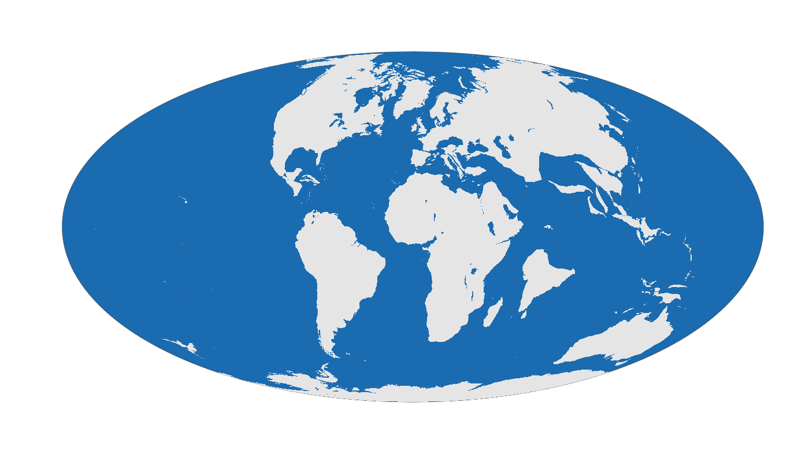

About
Functions to the GPlates Web Service and the GPlates Desktop Application allow users to reconstruct past positions of geographic entities based on user-selected rotation models without leaving the R running environment.

The online reconstruction (with the GPlates Web Service) makes the rotation of static plates, coastlines, and a low number of geographic coordinates available using nothing but an internet connection.
The offline reconstruction requires an external installation of the GPlates Desktop Application, but allows the efficient batch rotation of thousands of coordinates, Simple Features (sf) and Spatial (sp) objects with custom reconstruction trees and partitioning polygons. Examples of such plate tectonic models are accessible via the chronosphere.
Requirements
| Online (GWS) | Offline (Desktop App.) | |
|---|---|---|
| Internet connection | ✅ | ❌ |
| GPlates installed | ❌ | ✅ |
Aim
The package was developed to make R-based analyses that require paloecoordinate rotations easier to implement, i.e. for applying a rotation model - but not as a replacement of tools dedidacted to complex paleogeographic reconstruction and model development. For more complex analyses you are more than welcome to check out gplately and pyGPlates.
News
- The package was incorporated into the GPlates suite.
- Major update to v0.5 introduces rasters as reconstructable features and velocities. If you encounter any issues, make sure that you with the most recent version of the package.
Examples
Here are some quick examples using rgplates. See items in the Tutorials menu point for detailed explanations of functions.
Paleogeographic maps
You can reconstruct the positions of the plates at 65 Ma using the Merdith et al. 2021 model and transform them to Robinson projection using with this chunk of code:
library(rgplates)
# Rotation of plates using the GPlates Web Service
coastlines <- reconstruct("coastlines", age=65, model="MERDITH2021")
# the edge of the map (for mollweide)
edge <- mapedge()
# transform to Robinson
epsg <- "ESRI:54030"
coastsRob <- sf::st_transform(coastlines, crs=epsg)
edgeRob <- sf::st_transform(edge, crs=epsg)
# plot
plot(edgeRob, col="#1A6BB0", border="gray30")
plot(coastsRob, border=NA, col="gray90", add=TRUE)
Using reconstructions
The example below demonstrates the contextualization of fossil occurrence records using paleogeographic data products. Here the geographic positions of Kimmeridgian (Late Jurassic) dinosaur fossil collections from the Paleobiology Database were reconstructed with rgplates to match the proxy-corrected HadCM3L climate model results (mean annual air surface temperatures, Scotese et al. 2021 after Valdes et al. 2021), based on the PALEOMAP model (150 Ma). Shading indicates a reconstruction of possible landmasses, outlines indicate static plate polygons (also via rgplates). Raster and vector data were processed with terra and sf extensions, dinosaur outlines are from PhyloPic via the extension rphylopic. The code to reproduce the figure is available here.

Feature set
Due to the assymmetry of the underlying the dependecies the two main modules of the package (online, with GWS - offline, with the GPlates Desktop Application), have mismatching feature coverage. The long-term development goal is to make these two as symmetric in capabilities and comparable in performance as possible.
| Feature | Online (GWS) | Offline (Desktop App.) |
|---|---|---|
| Built-in feature collections | ✅ | ❌ |
| Point reconstruction | ✅ (slow) | ✅ (fast) |
Vector line/polygon input (sf) |
❌ | ✅ |
Raster input (terra) |
✅ | ❌ |
| Paleocoordintate input | ✅ | ❌ |
| Velocity rasters | ✅ | ❌ |
Notes
History
The functions here were originally developed and published as part of the chronosphere R package. For better compliance with UNIX philosophy and more efficient distribution/development, the original chronosphere has been broken up to three R packages:
-
chronosphere: version-controlled data distribution. -
rgplates: functions related to tectonic reconstructions. -
via: Virtual Arrays for efficient organisation of high-dimensional data.
This is a beta version, and like R, comes with absolutely no warranty.